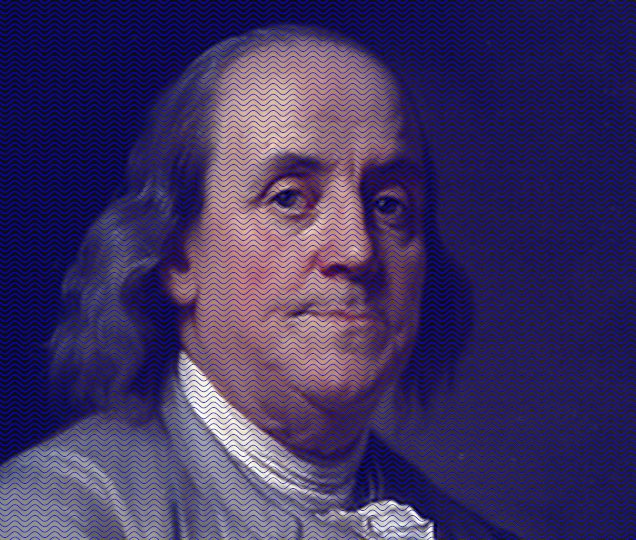
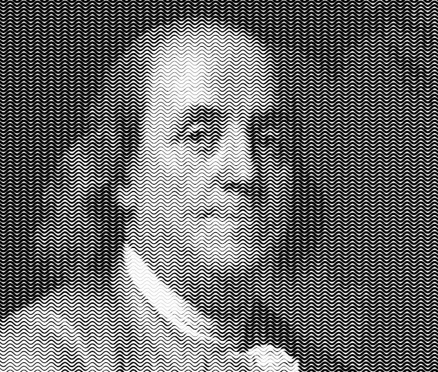
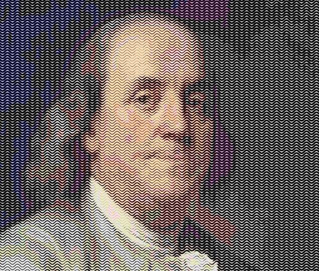
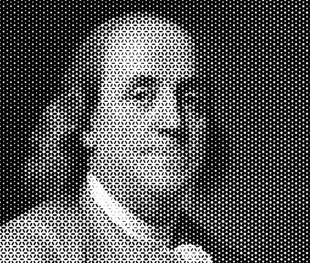

This script produces a line-stippled equivalent of an image, using either:
The user provides:
The script creates:
Filters>Artistic>Engraving lines>...Note: This script is for Gimp 2.10 and above.
Line width stepping: the amount of width increase between each stroking of the path. For instance a stepping of 0.5 produce lines widths of .5, 1.0, 1.5, 2.0.... Of course the line widths are mostly "perceptual", a .5px wide line spans complete pixels but fills them with a very light gray.You should usually aim for 5-10 steps for a reasonably smooth rendering. Minimum luminance(%): how dark the darkest parts of the image will be (0% is completely black, 100% is completely white). It is rarely useful to go below 20%. The script will create patterns of decreasing luminance by stroking the path with lines of increasing widths, and stop when the resulting luminance goes below the limit, or after 50 steps. Each step generates a layer, and so increases RAM and CPU usage.Note: a compination of a wide minimum width and a tight path coverage can make the script fail (one single layer is created before reaching minimum luminance).
Line width: the width of the strokes lines (which should be close to the distance between elements of the path)Minimal dash ratio: the minimal dash ratio. This determines how light the white parts will look.Dash period: the length (in pixels) of a dash-plus-space period. This should be kept rather short (no more than twice the distance between path elements)Dash ratio step: the size of the step between dash ratio values. Smaller value improve the definition of the output but also increase rendering time.Fuzz method: a shift pattern applied the the dashes. Without it (None), the spaces will create visible vertical gutters. Gamma: the gamma changes the mapping of values. A gamma greater than 1. will lighten the image but will give more variation in the darker area, while a gamma smaller than 1. will give more detail in the lighter areas.Blur: the amount of blur to be applied to the image before using it as a mask. If the image has too much detail it can produce a choppy output. Since the engraving itself lowers the image definition, blurring by half the average distance between path lines is often good compromise.Merge: determines if at the end the script keeps all the layers and masks or if they are merged into a single layer. Keeping the layers can be useful for debugging.Cap style, Join style, Miter limit: the usual options to stroke paths. For the first two, Current use the current Gimp settings. The Miter limit is only taken in account if the Join style is explicitly set to Miter (in other words, Join style=Current will also use Gimp's miter limit setting if Gimp's current join style is Miter. A good deal of effort is generating useful paths. Paths in my examples are usually generated with scripts from my collection:
path-waves, with all intermediate lines interpolated with path-inbetweenerpath-shaped-grid, where the segments are further transformed using ofn-path-to-shapeThe script entails stroking several very complex paths. This will make your CPU quite busy. Try your hand on small images.


The engraving is always in black. A white layer is added under it for convenience, but it could be removed. Not bad as it is, but we can add some color back:
Color mode
But of course, you can do other things:
